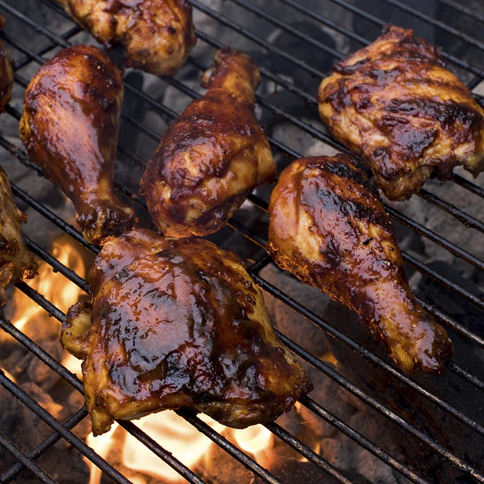

Grilled BBQ Chicken Recipe

Enjoy this summer by grilling some BBQ chicken in your own backyard grill
Description
Ingredients
- 3 cups sweet barbecue sauce
- 1 cup Italian salad dressing
- 4 bone-in chicken legs with skin
- Hickory wood chips as needed
Steps
- Mix barbecue sauce and salad dressing together.
- Put chicken legs in a large zip-top bag and pour sauce all over them.
Squeeze out the excess air and seal the bag.
- Massage marinade into the chicken a bit,
then refrigerate for 4 hours.
- Remove chicken from the refrigerator; set bag on the counter and
bring to room temperature, about 1 hour.
- Preheat an outdoor grill for medium-low heat and lightly oil the grate.
Load a smoker box with wood chips and set on the grate.
- Remove chicken from the bag and transfer to the preheated grill. Cover and cook for 10 minutes, then flip,
basting both sides with the remaining marinade.
- Continue to cook (with the lid closed and listening for flare-ups) until chicken is no longer pink at the bone
and the juices run clear, about 10 more minutes. An instant-read thermometer inserted near the bone should read 165 degrees F (74 degrees C).
- Remove chicken to a platter and tent with foil. Let rest for 5 minutes before serving.
Return Home